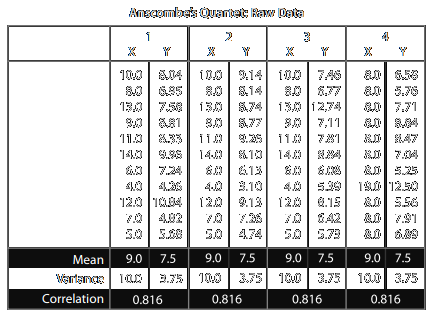
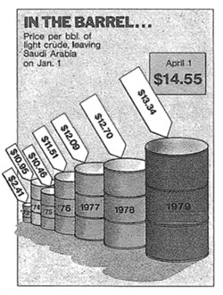
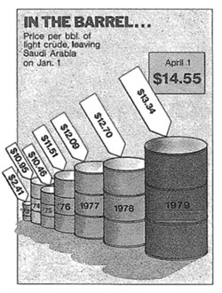
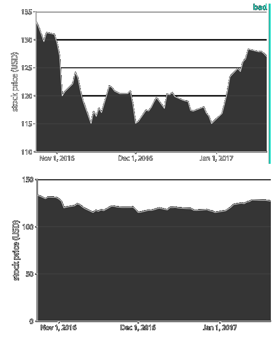

Study and Development of a Dashboard
for the analysis and visualization
of value-added services for mobile telephony.
at Engineering Informatica SPA
Author: Leonardo Zanchi
Supervisor: Giancarlo Ruffo
Data Visualization
a definition
The
representation
and
presentation
of
data
to
facilitate
understading.
Andy Kirk,
Data Visualisation: A Handbook for Data Driven Design
Representation
Marks
Channels
- Points (0D)
- Lines (1D)
- Areas (2D)
- Volumes (3D)
- Position
- Color
- Shape
- Angle
- Size
Representation
Anscombe's Quartet (F. J. Anscombe, Graphs in Statistical Analysis)

Presentation
Design of visualization
- View arrangement
- View composition
- Interactivity
- Annotation
- Color
Dati
Importance of data
Operations
- Acquisition
- Analys
- Transformation
- Exploration
Data
Types of data
- Attributes
- Item
- Link
- Position
- Grid
Attributes
- Categorical
- Ordered
- Ordinal
- Quantitative
facilitate understading
goal of Data Visualization
Why?
- Discovery
- Exploration
- Take decision
- Presentation
Principles of (good)
Data Visualization
- Integrity
- Accessibility
- Elegance
Integrity (and honesty)
"Show data variation, not design variation."
Edward Tufte,
The Visual Display of Quantitative Information
- Proportionality and perception of area (Lie Factor)
- Consistency
- Color
- Modification of data
- Acquisition of data
- Bias assumption and deduction
Integrity
 


Accessibility
- Trade-off effort / reward
- Labels e context
- Adjust to public
- Maximize data-ink ratio
- Remove non-data-ink (within reasonable limits)
- Use of color
Elegance
Perché?
- Attract the public
- Stimulate interest
Come?
- Armony of color (balance, simmetry)
- Composition (marks, channels e Views)
The achievement of elegance must take place without affecting integrity and accessibility.
Project developed
Goals
- Development of new charts
- Dashboard Development
Dashboard
Advantages
- Facilitate comparison
- High interactivity
- Amount of information
How?
- Overview, then details (The Eyes Have It, Ben Shneiderman)
- Multi Views
Technologies
Back-end
Java
Tomcat
Front-end
JavaScript
HTML5
CSS
Visualizzazione
HighCharts
Back-end
Developed following the MVC pattern
Model e Controller
- BEAN
- DAO
- BLO
- ACTION
View
- JSP and front-end
Front-end
HTML5
- Canvas
- SVG
CSS: Bootstrap
- Pagination
- Responsive
- Familiarity
JavaScript
- Modularity
- Code reuse
HighCharts
Advantages
- Out-of-the-box
- Facility
- Support
Limiti?
- Flexibility
Implementation
- Modularity
- Code reuse
- Configuration & controller
Dashboard development
Dashboard v1
Table vs Chart
Dashboard v2
Final result
Demo
Errors
Dashboard v1
Cards vs Streamgraph

Dashboard v1
Stats vs Boxplot
Dashboard v2
Part I
- Gauge
- Column
- Overlapping column
Dashboard v2
Part II
- Spiderweb 1
- Spiderweb 2
Dashboard v2
Part III
- Sunburst
- Line chart
- Parallel coordinates
Dashboard v2
Part IV
- Synchronized chart
- Scatterplot
Dashboard v2
Part V
- Butterfly 1
- Butterfly 2
Some statistics
Development times
Lines of code
Commits repository